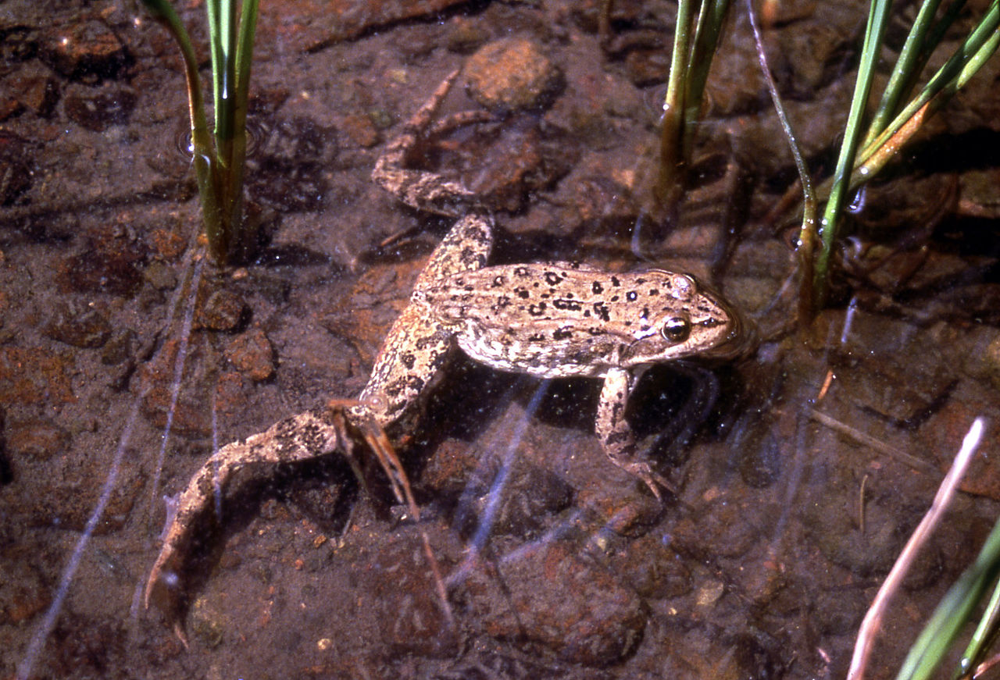
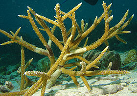
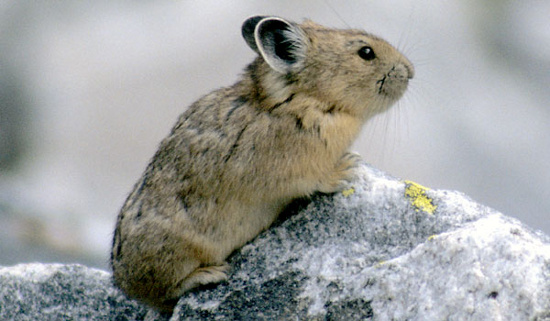
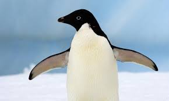
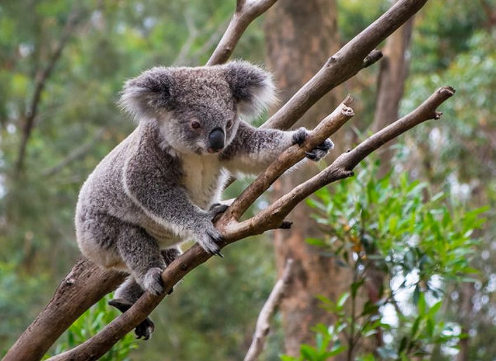

| Czyli co się stanie jeżeli nic się nie zmieni... | |||
| Zdjęcie | Gatunek | Nazwa Łacińska | Przyczyna wyginięcia |
|---|---|---|---|
|  | Columbia Spotted Frog | Rana luteiventris | Wysychanie jezior Namnażanie się groźnego grzyba Batrachochytrium Dendrobatidis |
|  | Staghorn coralMazur | Acropora Cevicornis | Wzrost temperatury oceanów |
|  | Szczekuszka amerykańska | Ochotona Princeps | Wzrost temperatury powietrza |
|  | Pingwin Adélie | Pygoscelis Adeliae | Zanikanie terenów lęgowych w wyniku topnienia lodu |
|  | Koala | Phascolarctos Cinereus | Zagłodzenie spowodowane spadkiem wartości odżywczej eukaliptusa w wyniku skażenia dwutlenkiem węgla Zanik lasów spowodowany pożarami |